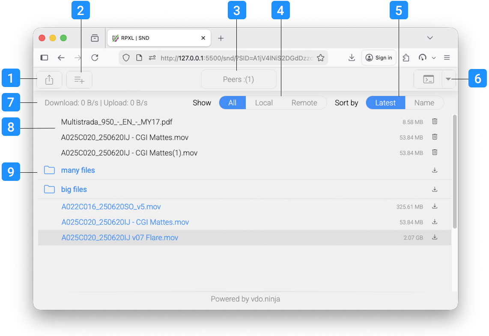

In short, SND is a browser based, peer to peer, file sharing app. Load the page in your browser, select files to share and send the link to anyone to allow them to download the files directly from your machine. Peers can download or share their own files. Transfers are encrypted and secure. Files remain shared as long as the peer is connected.
No installation, no signups.
Watch the short video bellow for a quick demonstration.
Details
Came across the excellent, vdoninja project by Steve Seguin some time ago. It allows very clever video and file handling through WebRTC. Have been fiddling with it for some time and created a simple file sharing app that uses vdoninja to handle the webRTC back end.
Runs in the browser, is simple javascript, nothing to install or download. Simply drag individual or multiple files or folders to the browser window and that will generate a share key which you can send to peers to allow them access to those files.
Peers can only download shared files or folders, they can not edit them in place or delete them. Peers can also share files to the same link (by either dragging on to the browser window or using the add files button) and these will be available to all other others peers connected.
Remote files are displayed in blue, local files in grey. You can filter files by, all, remote or local. You can also sort files by either name or latest. If you delete a file from the share it will disappear for all peers but will remain on your local drive. You can only remove files you have shared. Downloads can be started or cancelled, not resumed, but there is a queueing system to download multiple files or entire directories. Unlike torrents, partial downloads are not shared between peers and if a peer disconnects all their shares are removed.
Interface
'
1Share link
Allows you to share a link to the session with your peers. Clicking this icon will copy the link to clipboard which you can then send via whatever method is convienient. Share links are generated after you first add files and are unique for every session.
2Add files
Open a browser file picker to add more files. On desktop you can select mutliple files or folders to share but on mobile you can only share files.
3Connected users
Shows the number of peers currently connected to you
4Filter
Filter files by, all, local (files you have shared) or remote (files other peers have shared).
5Sort
Sort files alpabeticaly or by latest files first
6Log window
Open and close the log window for any more information on file transfers, requests or peers
7Transfer speeds
Will display Dowload and upload speeds if you are transfering any files.
8Local files (black)
Localy shared files (files shared by you) are displayed in black with their file sizes.
You can remove them either individualy or a by folder by using the trash icon.
9Remote files (blue)
Files shared by other peers will appear in blue along with their size.
Click on a folder to expand or collapse it.
You can download them either individualy or a by folder by using the download icon.
Limitations
Being browser based there are a few limitations, file transfer speed is good, not great, this is more due to my limited understanding than anything to do with webRTC or vdoninja. If you run the browser tab in the background or minimize the window expect a performance hit, browsers throttle background tabs and this is no exception. Every peer connected to your machine will create an extra load if they are actively downloading, groups of about a dozen and under should be reasonable. Latency over Wifi can also become an issue if you’re really saturating the link, in which case we would recommend using ethernet.
It has been tested in Chrome, Firefox and Safari, on Windows, macOs and Linux and works on both desktop and mobile. Mobile is limited that if you tab to another app or lock your device it will disconnect, but for smaller files it might still be useful.
Technical
Everything is run through HTTPS, and webRTC is encrypted by default. We’re using vdoninjas public STUN and TURN servers for the initial handshake, after that all traffic is direct, peer to peer. The sharing key is a random 20 digit alpha-numeric (upper and lower case, case sensitive) created every time the page is loaded. I am not currently encrypting the key when copying to clipboard to send to a peer as these are meant to be for one time use and ephemeral shares.
File chunking is simple base64, which does add significant data overhead, but it’s fast and it works and I’m not smart enough to figure out how to do it as RAW data. Same with the queue and missing chunk requests. It works but your mileage may vary, if something is broken let me know, I’ll try sort it out. Some of the code was done with the help of AI, especially the data and file chunking as that is way above my level of skill, some of the file sorting too, as it’s approach was way simpler than my ham fisted attempt.